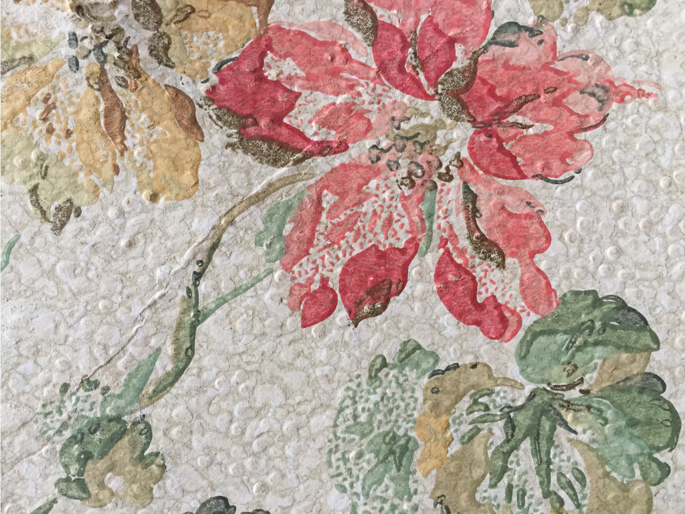
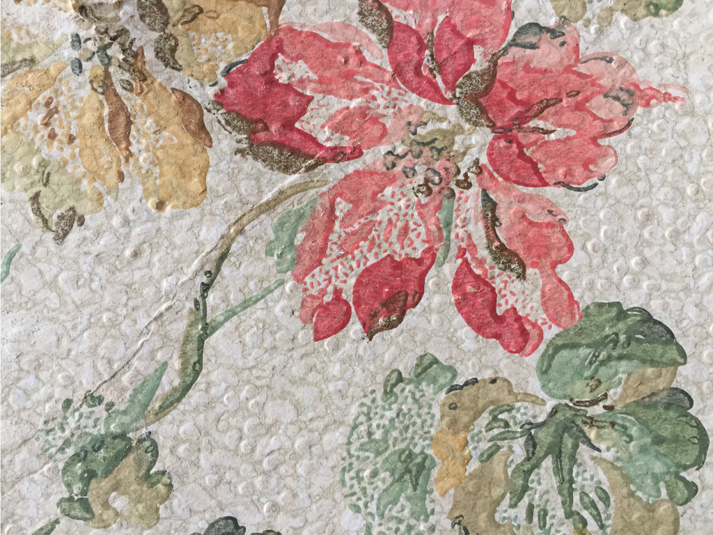
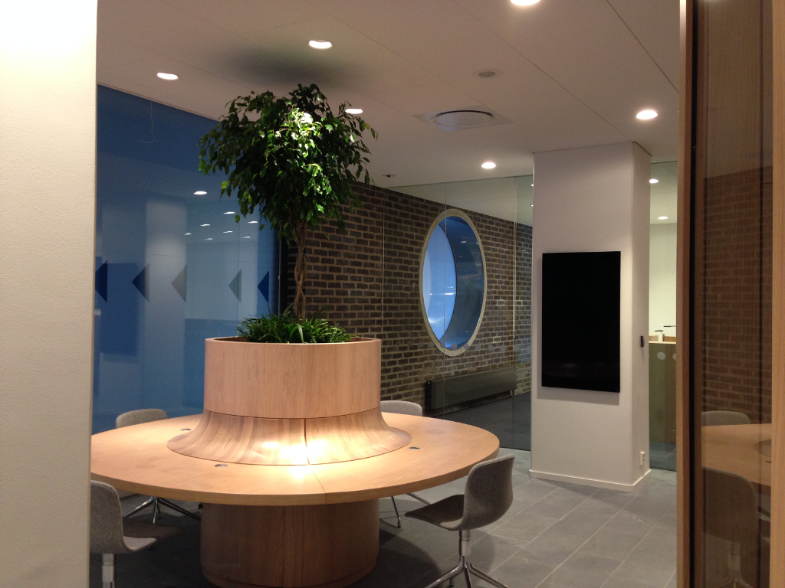
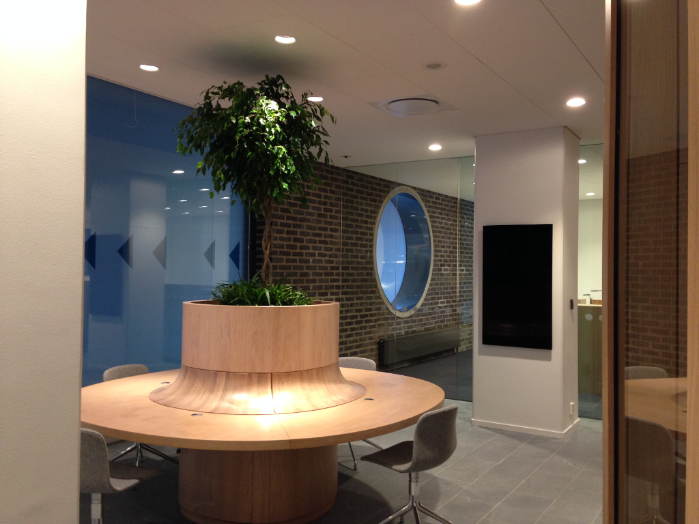

Svenska Akademiens ordlista:
reko [re´ko] oböjligt adjektiv ● ⟨vard.⟩ rekorderlig, rejäl
Svensk ordbok:
reko adjektiv, ingen böjning ● hygglig och pålitlig vard. JFR juste
● rättvis och ärlig vard. JFR reko, sportslig, renhårig, schysst
Svenska Akademiens ordbok:
REKO, se rekorderlig
REKORDERLIG
om person: rejäl, dugande, duktig, pålitlig, präktig, redbar, respektabel.
Välkommen till Rekoark! Kul att du hittat hit.
Rekoark är ett litet nystartat arkitektkontor som i första hand fokuserar på byggnadsvård och hållbart byggande. Jag som driver Rekoark heter Susan Hende och jag hjälper dig gärna med skisser, bygglovshandlingar, bygghandlingar, färgsättning eller kanske bara bollplankning av olika idéer om alternativa material och planlösningar. Utöver det så kan jag också göra tillgänglighetsgranskningar och skriva utlåtanden.
Om mig
Jag är en erfaren arkitekt som tidigare huvudsakligen jobbat med vanliga kommersiella projekt; flerfamiljshus, vårdbyggnader och kontor samt detaljplaner. Jag har också varit handläggare i två riktigt stora projekt; Friends arenas entré- och konferensbyggnad samt SEB:s nya huvudkontor på 96 000 kvm. Utöver det så har jag gjort en del inredningar och färgsättningar samt jobbat mycket med tillgänglighet.
För några år sedan, efter flera väldigt stressiga år, så drabbades jag av utmattningssyndrom och har efter det försökt hitta en bättre balans i vardagen. Ett sätt att få bättre kontroll över min arbetssituation var att säga upp mig och starta eget för att kunna jobba med de frågor som intresserar mig mest: byggnadsvård och hållbart byggande.
Jag har flera utbildningar inom byggnadsvård och hållbart byggande (som ju har många paralleller) och jag har även haft egna privata byggnadsvårdsprojekt. I nuläget håller min man och jag på att renovera ett 1870-talshus på Gotland med en blandning av traditionella tekniker och lerbygge.
Om du väljer mig som arkitekt kommer jag alltid att i första hand föreslå miljövänliga och hållbara material och metoder.
Utbildningar
1997-1998 Byggnadsrestaurering och Kulturmiljövård
Högskolan på Gotland, Visby
1986-1991 Arkitekt
Chalmers, Göteborg
Kurser
2018 Behörig Kulturbyggnader
Byggnadsvårdsföretagen
2017 Miljöbyggnad baskurs 3.0
SGBC
2017 Kulturvärden i plan- och bygglovprocessen
Approvus
2016 Miljöbyggnad baskurs
SGBC
2014 Tillgänglighet
BFAB, Stockholm
2008 Tillgänglighet, grundkurs
BFAB, Stockholm
Projekt
 

Byggnadsvård och hållbart byggande
Detta är vad jag brinner för, både byggnadsvård och hållbart byggande som jag ser som två saker som går hand i hand. Att riva ett mer eller mindre friskt hus för att bygga ett nytt är inte hållbart hur eko det nya än är. Vi måste sluta bygga med dåliga material där hastighet och snabba pengar är de viktigaste parametrarna. Långsiktigt och gediget byggande med sunda, lokala material och med byggnadsdelar som går att underhålla är enda vägen framåt.
Jag har precis blivit tillfrågad om jag kan ta mig an ett halmbalsbyggprojekt på Gotland, självklart sa jag ja! Helt i mitt intresseområde men också helt nytt för mig, ser fram emot att lära mig massa nya saker på vägen, kul 😃 Mer om detta kommer säkerligen här på sidan framöver.
Min man och jag har ett eget byggnadsvårdsprojekt som fortskrider så sakteliga där vi renoverar ett litet hus från 1870 med fokus på lera både i väggar och golv. Om någon är intresserad av vad vi gör där så kika gärna på vårt instagramkonto för projektet: @pinnmurshuset
Foton: mina egna
 

Danske Bank – Pilotprojekt med BIG
Sommaren 2013 blev jag uppringd av det danska arkitektkontoret BIG som undrade om jag kunde vara deras lokala arkitekt i ett hemligt pilotprojekt som gick ut på att skapa en helt ny inredningsprofil för hela Danske Banks koncern och alla deras bankkontor över hela världen. Två bankkontor skulle byggas om och inredas in i minsta detalj enligt det nya konceptet för att sedan utvärderas. Ett låg i Trondheim och det andra på Flemminggatan i Stockholm. Klart att jag sa ja! Att de ringde just mig var för att lokalen, som ligger i Trygg Hansa-huset, förvaltas av Aberdeen Asset som jag gjort många hyresgästanpassningar åt och handläggaren på BIG hade frågat Aberdeens lokalansvarige om hon kunde rekommendera någon arkitekt i Stockholm och hon rekommenderade mig. Roligt!
Förutom att hjälpa till att granska så allt överensstämde med svenska krav enligt BBR och hålla kontakter med Stadsbyggnadskontoret så var jag på bygget flera gånger i veckan och besiktigade alla material och allt montage. I Danmark har arkitekter en mer övergripande roll än i Sverige och det var intressant att få testa på det sättet att arbeta. Min roll var enbart som platsansvarig och typ Sverige-anpassare, allt arkitektoniskt arbete med utformning mm är utfört av BIG. Det var ett kul projekt att jobba med även om det blev både helger och kvällar eftersom jag förväntades vara tillgänglig mer eller mindre hela tiden. En tid efteråt så återkom Danske Bank till mig med ett eget fristående uppdrag som gällde en ombyggnad av ett mindre kontor i anslutning till detta pilotprojekt och det var ju också kul.
Uppdragsgivare: BIG
Foton: mina egna